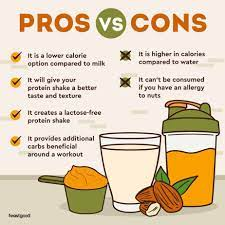

Serial No.
Image
Facts
1
Eating protein-rich foods and taking supplements may help people feel fuller for longer. Feeling full tends to result in smaller portion sizes and less frequent snacking, which can help a person maintain a healthy weight or lose weight if necessary. A 2017 review reported that supplementing with whey protein might reduce body weight and total fat mass in people who are overweight or obese. It may also reduce blood pressure, total cholesterol, and other risk factors for cardiovascular diseases.
2
Protein is essential for muscle growth. Many athletes and gym enthusiasts consume protein shakes because they believe that these drinks will help them bulk up after strength training.
A 2018 analysis of 49 studies supports the use of protein supplementation for this purpose. The research suggests that protein supplements significantly improve muscle size and strength in healthy adults who perform resistance exercise training, such as lifting weights.
Protein supplementation was equally effective in men and women. However, the effectiveness may decrease with age, as older adults have higher protein requirements than younger people.
3

As well as contributing to muscle growth, protein can help repair damaged muscles and tissues. As a result, athletes may use protein powder to speed up recovery from muscle soreness after exercise.
Many studies reportTrusted Source that taking protein supplements after exercise can aid recovery by reducing muscle damage and improving muscle performance and muscle protein synthesis.
4

The recommended daily intakeTrusted Source of protein for people aged 19 years and over is 46 g for women and 56 g for men.
People who find it challenging to meet these amounts, possibly including some vegans and vegetarians, may find that protein powder offers an easy solution to the problem.
Athletes, weight lifters, older adults, and people with a chronic illness may need to exceed the general protein intake recommendation.
3
As well as contributing to muscle growth, protein can help repair damaged muscles and tissues. As a result, athletes may use protein powder to speed up recovery from muscle soreness after exercise.
Many studies reportTrusted Source that taking protein supplements after exercise can aid recovery by reducing muscle damage and improving muscle performance and muscle protein synthesis.
4
The recommended daily intakeTrusted Source of protein for people aged 19 years and over is 46 g for women and 56 g for men.
People who find it challenging to meet these amounts, possibly including some vegans and vegetarians, may find that protein powder offers an easy solution to the problem.
Athletes, weight lifters, older adults, and people with a chronic illness may need to exceed the general protein intake recommendation.
4